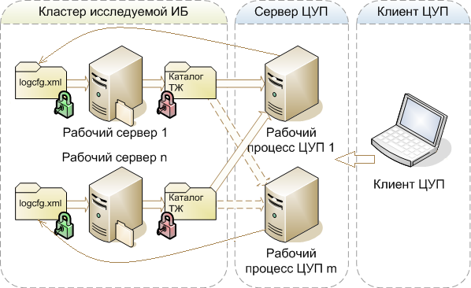
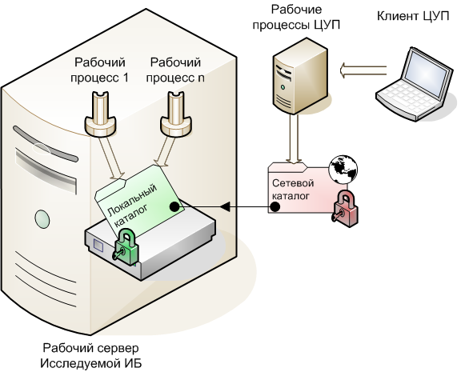
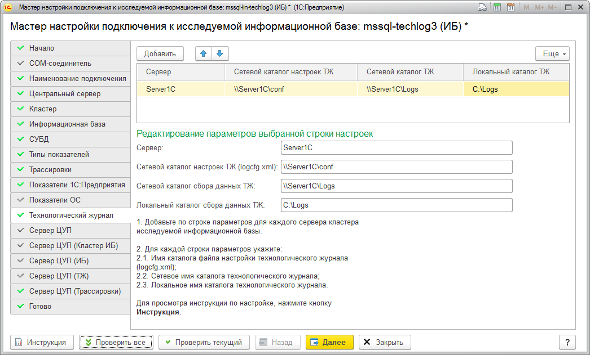

Следующим пользователям необходимо установить соответствующие права на локальные и сетевые каталоги настройки и сбора технологического журнала:
Принципиальная схема обращения ЦУП к каталогам технологического журнала исследуемой информационной базы выглядит так:

При включении записи аналитических показателей, сервер ЦУП настраивает файлы logcfg.xml для каждого рабочего сервера исследуемой информационной базы. Для этого у рабочих процессов кластера ЦУП должны быть права записи (зеленый замок) в каталог файла настройки технологического журнала logcfg.xml. Рабочие процессы исследуемой информационной базы перечитывают настройки logcfg.xml и в течении минуты включают запись технологического журнала в указанные каталоги. При этом у рабочих процессов должны быть права записи (красный замок) в указанные в настройках ЦУП каталоги.
При выключении записи аналитических показателей, сервер ЦУП удаляет сделанные им ранее настройки из logcfg.xml. Рабочие процессы исследуемой информационной базы в очередной раз перечитывают logcfg.xml и в течении минуты отключают запись в каталоги технологического журнала.
После остановки записи в технологический журнал исследуемой информационной базы, фоновые задания информационной базы ЦУП, работающие в рабочих процессах кластера информационной базы ЦУП, загружают созданный технологический журнал в информационную базу ЦУП и удаляют файлы технологического журнала. Для возможности чтения и удаления файлов и каталогов технологического журнала, у рабочих процессов ЦУП должны быть права чтения и записи (красный замок) в каталоги технологического журнала.
Доступ к каталогам настройки и сбора технологического журнала может осуществляться по сетевым путям, поэтому важно понимать, как настраиваются права доступа в данном случае. Ниже рассмотрен случай, когда на рабочем сервере исследуемой информационной базы расположены рабочие процессы и каталоги технологического журнала, к которым обращается ЦУП.

Рабочие процессы исследуемой информационной базы обращаются к локальному каталогу технологического журнала, поэтому у них должен быть соответствующий доступ к нему (зеленый замок).
Сетевой каталог можно рассматривать, как ссылку на локальный каталог, но при этом права доступа к сетевому каталогу настраиваются отдельно (красный замок). В результате, права доступа к сетевому ресурсу, это результат пересечения множества прав на локальный (зеленый замок) и сетевой каталоги (красный замок).
ВНИМАНИЕ: Для того, чтобы пользователь смог получить доступ к содержимому сетевого каталога, у него должны быть соответствующие права доступа сразу в локальный (зеленый замок) и сетевой каталог (красный замок). Следовательно, если у пользователя, обращающегося к сетевому ресурсу, не будет доступа к локальному или сетевому ресурсу, то в доступе будет отказано.
Для каждого рабочего сервера кластера исследуемой информационной базы необходимо добавить по одной строке настроек технологического журнала, о каждой из которых рассказывается далее.
Пример настроек, где:

Каталог настроек технологического журнала исследуемой информационной базы расположен в подкаталоге "conf", каталога запуска сервера 1С:Предприятия исследуемой информационной базы. Например, если сервер исследуемой информационной базы находится на компьютере под управлением операционной системы Microsoft Windows, этот каталог, при установке 1С:Предприятия по-умолчанию, будет иметь имя:
Если сервер ЦУП и сервер 1С:Предприятия исследуемой информационной базы находятся на одном компьютере, то в качестве имени каталога настройки ТЖ можно использовать локальное имя каталога ТЖ (по-умолчанию: %PROGRAMFILES%\1cv8\8.3.x.y\bin\conf).
Если сервер ЦУП и сервер 1С:Предприятия исследуемой информационной базы находятся на разных компьютерах, то необходимо, для каталога настройки ТЖ, создать сетевой ресурс, чтобы он был доступен по сети. Затем имя полученного сетевого ресурса нужно указать в качестве имени каталога настройки ТЖ.
В результате получится сетевой ресурс вида "\\Server1C\conf" (где: Server1C - имя сервера исследуемой ИБ; conf - имя созданного ранее сетевого ресурса), который необходимо указать в качестве каталога настройки ТЖ.
У пользователя, от имени которого запущены рабочие процессы кластера исследуемой информационной базы, должны быть настроены права на чтение и запись в указанном каталоге настройки ТЖ, как локально, так и по сети. Локальные права настраиваются в свойствах каталога на закладке "Security" (безопасность). Сетевые права настраиваются в свойствах каталога на закладке "Sharing" (доступ).
| Рабочие процессы исследуемой ИБ | |
| Право чтения | √ |
| Право записи | √ |
ВНИМАНИЕ: Для работы ЦУП, файл logcfg.xml создавать вручную не нужно, т.к. всю необходимую работу по настройке технологического журнала, ЦУП выполнит самостоятельно.
Сетевой каталог ТЖ ссылается на локальный каталог сбора данных ТЖ, т.е. сетевой и локальный каталоги ТЖ указывают на одно и тоже место, но различными способами.
Если сервер ЦУП и сервер 1С:Предприятия исследуемой информационной базы находятся на одном компьютере, то в качестве имени сетевого каталога ТЖ можно использовать локальное имя каталога ТЖ (частный случай).
Если сервер ЦУП и сервер 1С:Предприятия исследуемой информационной базы находятся на разных компьютерах, то необходимо для локального каталога ТЖ, создать сетевой ресурс, который и станет сетевым каталогом ТЖ. Затем имя полученного сетевого ресурса нужно указать в качестве имени сетевого каталога ТЖ.
В результате получится сетевой ресурс вида \\Server1C\Logs (где: Server1C - имя сервера исследуемой ИБ; Logs - имя созданного ранее сетевого ресурса), который необходимо указать в качестве каталога настройки ТЖ.
У пользователей, от имени которых запущены рабочие процессы кластера информационной базы ЦУП, должны быть права чтения и записи в сетевой каталог ТЖ, как локально, так и по сети. Локальные права настраиваются в свойствах каталога на закладке "Security" (безопасность). Сетевые права настраиваются в свойствах каталога на закладке "Sharing" (доступ).
| Рабочие процессы ЦУП | |
| Право чтения | √ |
| Право записи | √ |
Локальный каталог ТЖ может располагаться в любом каталоге на компьютере сервера 1С:Предприятия исследуемой информационной базы. Этот каталог является основой для создания сетевого каталога ТЖ.
У пользователей, от имени которых запущены рабочие процессы кластеров, как исследуемой информационной базы, так и информационной базы ЦУП, должны быть права чтения и записи в этот каталог.
| Рабочие процессы ЦУП | Рабочие процессы исследуемой ИБ | |
| Право чтения | √ | √ |
| Право записи | √ | √ |
ПРИМЕЧАНИЕ: В качестве локального каталога технологического журнала можно также задавать и сетевой каталог, расположенный на другом компьютере, но делать это не рекомендуется из-за соображений производительности сервера исследуемой информационной базы.